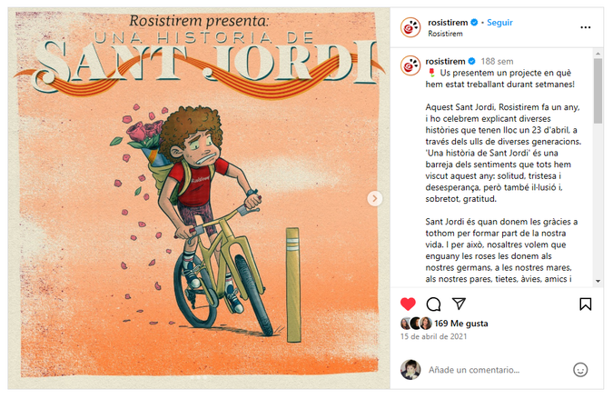
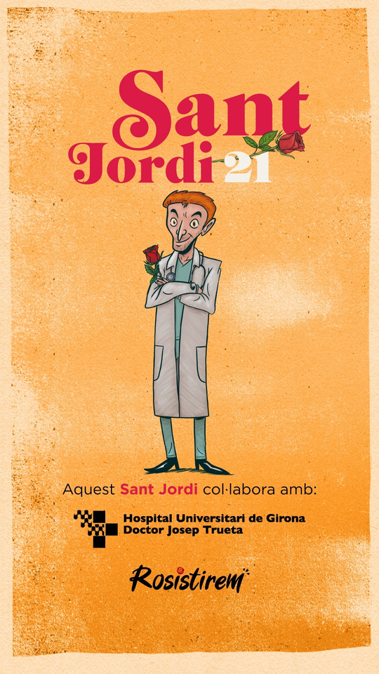
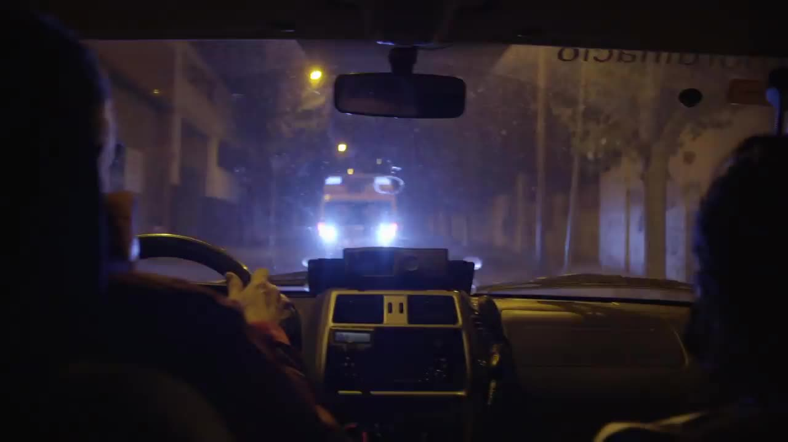

Rosistirem
Led the content team behind a multi format Sant Jordi campaign built around recurring characters, closing with a short film capturing the spirit of the festival. Built an ambassador network of dozens of creators to carry the message before launch, and produced the film in house alongside partner organizations.
The challenge
Sant Jordi is Catalonia's biggest cultural and commercial date for books and roses. Rosistirem needed a campaign that would feel like part of the culture around the festival rather than an ad competing for attention inside it.
What I did
I built the content team behind a multi format campaign structured around recurring characters, distributed across the weeks before the festival, and closing on the day itself with a short film that captured the spirit of Sant Jordi rather than pitching the product directly. Alongside that, I built an ambassador network of dozens of creators across different audience sizes and niches to carry the message into the lead up to launch.
Result
The campaign generated more than 100 media placements, well beyond what the brand's own channels could reach alone, with the short film acting as the anchor piece journalists and creators picked up.
Work samples


